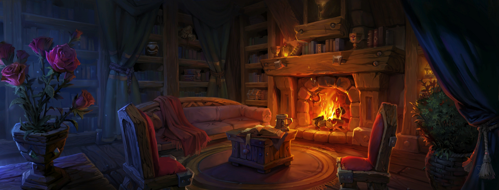

MIDNIGHT : guide complet du Logis
Le Logis, 21 ans après le lancement de World of Warcraft, arrive dans The War Within avec un accès anticipé dès le 3 décembre en Europe.
Ce nouveau système pose enfin les bases d'un vrai logement personnel dans WoW, entre terrain à aménager, bâtiments à construire et nombreuses options décoratives.
Ce guide vous accompagne pas à pas, du premier accès à votre nid douillet jusqu'aux fonctionnalités avancées.